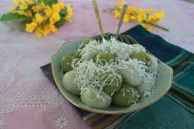

4 Burmese Desserts based on two ingredients
Two main ingredients involved
Glutinous rice flour
Jaggery
Four simple desserts
Mote Lone Yay Paw

Mote Si Kyaw
Mote Kyar Si
Mote Let Kout
All photos credit to original uploaders